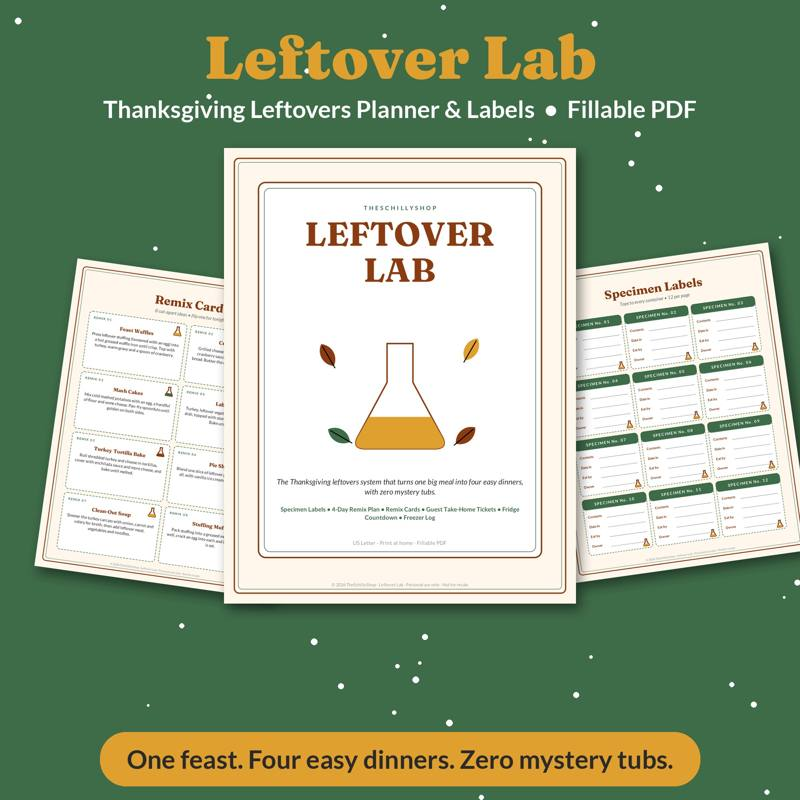

The Meal Planning Game: How to Get Your Family to Help Plan Dinners
"What's for dinner?" might be the most-asked question in any household. Meal planning solves it, but planning alone can feel like a chore — and when the family doesn't like the plan, it's even more frustrating. The fix: make meal planning a game the whole family plays together. When kids help choose dinners, they're more likely to eat them.
Why involve the family?
- Buy-in: people complain less about meals they chose.
- Life skills: kids learn about nutrition, budgeting and cooking.
- Less stress: the person who usually plans gets help.
- Variety: new ideas come from everyone.
Step 1: Build a meal library
Before the game, make a list of meals your family already likes. Aim for 20 to 30. Write each meal on an index card or a printed card. Include:
- Meal name
- Main ingredients
- Prep time
- Who likes it
Sort cards by category: pasta, tacos and wraps, soups, slow-cooker, sheet-pan, breakfast-for-dinner, and so on.
Step 2: Set the rules
Agree on rules before you play. Examples:
- Each person picks one dinner per week.
- At least one vegetable side must be included with each meal.
- No more than two pasta nights per week.
- One "new recipe" night every week or two.
- One leftovers night.
- Busy nights get quick meals.
Step 3: Play the draft
Here's where it becomes a game. Like a sports draft, family members take turns picking meals for the week:
- Lay out the meal cards.
- Determine draft order — youngest first, or roll a die.
- Each person picks one card and places it on a day of the week.
- Continue until the week is full.
- Trade rules: family members can trade days or meals if both agree.
Kids love the strategy — saving their favorite meal for Friday, trading for pizza night. Our Dinner Draft family meal planner is a printable version of this game, with meal cards, a weekly draft board and a grocery list.
Step 4: Build the grocery list
Once the week is set, go through each meal and list ingredients. Check the pantry and fridge first. Older kids can help write the list and compare prices.
Step 5: Assign kitchen helpers
Each person who picked a meal helps cook it — at an age-appropriate level:
- Little kids: wash vegetables, stir, set the table.
- School-age kids: measure, crack eggs, make salads.
- Teens: cook full meals with supervision.
Handling picky eaters
- Allow one "safe" side at every meal. A food the picky eater reliably likes.
- Use the "one bite" rule — or skip it if it causes battles.
- Deconstruct meals. Taco bars, bowls and build-your-own pizzas let people choose.
- Let picky eaters pick, too. They'll eat their choice, and they learn to compromise on others' nights.
Plan for leftovers
Leftovers save time and money. Build a leftovers night into the plan, and think about how one meal can become another:
- Roast chicken becomes chicken quesadillas.
- Chili becomes chili mac.
- Taco meat becomes taco salad.
- Rice becomes fried rice.
After big holiday meals especially, a leftovers plan prevents waste. Our Leftover Lab planner has container labels and a section for leftover recipe ideas.
Budget tips
- Plan meals around sales and what's in season.
- Use overlapping ingredients across meals.
- Cook big batches and freeze portions.
- Keep a list of pantry staples so you're never starting from zero.
Keep the game fresh
- Theme weeks: "around the world," "breakfast for dinner week," "grill week."
- Mystery ingredient challenge: one meal must use a surprise ingredient.
- Chef of the week: one family member gets an extra pick and a fancy title.
- Add new cards: every month, each person adds one new recipe to try.
A sample week
- Monday: sheet-pan chicken and vegetables (parent's pick)
- Tuesday: tacos (kid one's pick)
- Wednesday: pasta with meat sauce (kid two's pick)
- Thursday: leftovers night
- Friday: homemade pizza (family vote)
- Saturday: new recipe
- Sunday: slow-cooker soup
Meal planning doesn't have to be one person's job. Turn it into a weekly game, and you'll gain helpers, reduce dinner arguments and maybe discover a new family favorite. Want to keep the household running smoothly? Read our guide to a family chore system that works.

A meal planner that turns picking dinners into a family draft game.
See it on Payhip
Shop the printables mentioned
Dinner Draft Family Meal Planner Game
A meal planner that turns picking dinners into a family draft game.
View on Payhip
Leftover Lab Thanksgiving Leftovers Planner
Leftover planner, recipe ideas and container labels for after the feast.
View on PayhipMore guides
- Baby Shower Prediction Game Ideas (and How to Run Them)
- Bridal Shower Games That Aren't Cringe
- Chili Cook-Off Rules and Scoring: A Complete Host Guide
- Christmas Party Games for Adults (No Supplies Needed)
- Cookie Exchange Party Ideas: How to Host a Christmas Cookie Swap
- A Family Chore System That Actually Works
- Galentine's Party Games Your Friends Will Actually Love
- New Year's Eve Family Traditions Kids Will Love
- Snow Day Activities for Kids: 30 Ideas Indoors and Out
- Teacher Gift Ideas From the Whole Class (Thoughtful and Budget-Friendly)
- Thanksgiving Kids Table Activities That Keep Them Busy
- Ugly Sweater Contest Ideas: Categories, Judging and Fun Twists
- Vacation Rental Cleaning Checklist: Room-by-Room Turnover Guide
- Valentine's Escape Room for Couples at Home: How to Set One Up